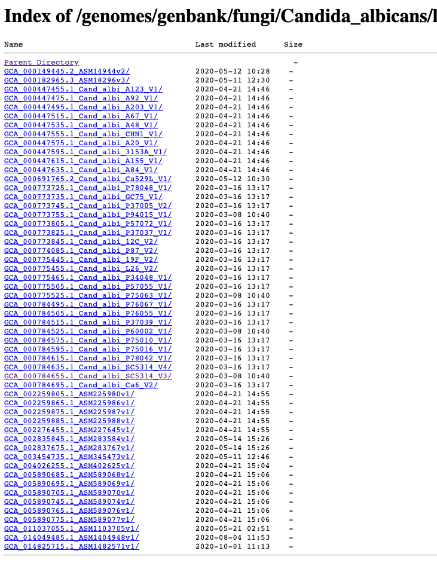
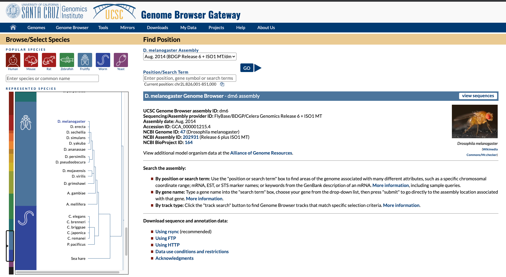
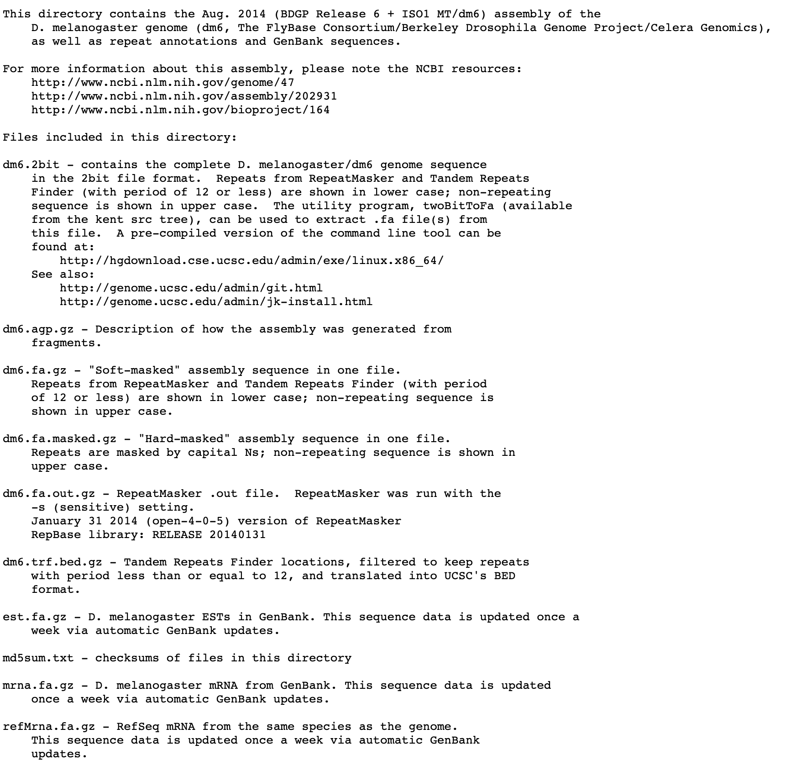
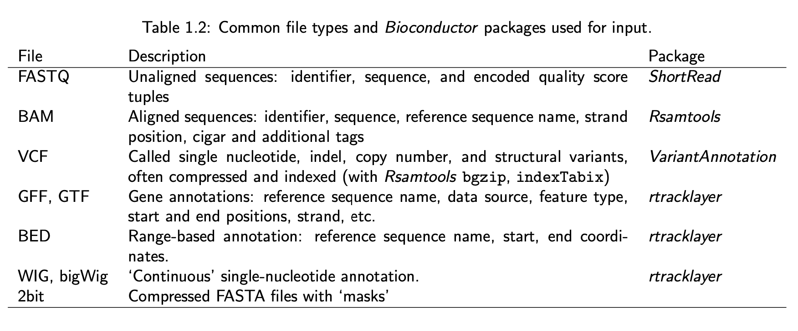
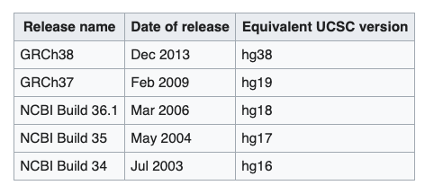
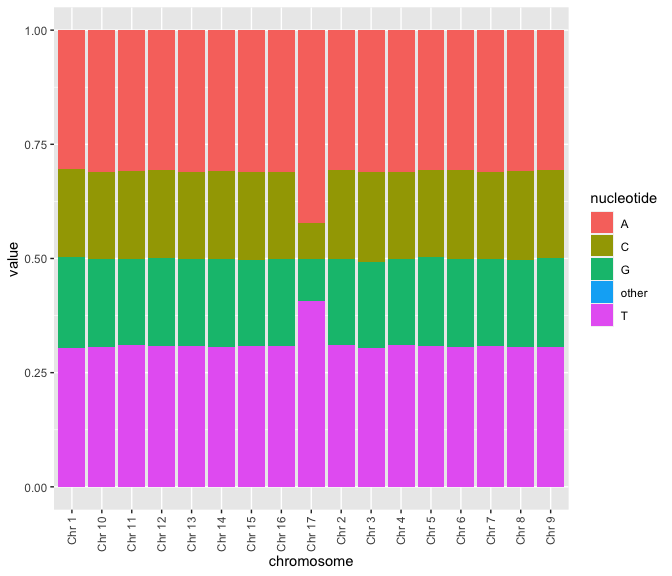

Representing genomes and their annotations
M Hallett
21/07/2020
Genomes
Not surprisingly, genomes are commonly required for analysis (otherwise, why would we be doing all this sequencing?)
Some are small (viruses) and some are big (plants). R Shiny app
Some are circular including virsuses, prokaryotes (that is, Bacteria and Archae/without nucleus) and mitochondria of Eukaryota.
Some are linear (Eukaryota but some bacteria have linear genomes).

Cancer genomes
A hallmark of cancer is genomic instability.
The neoplasticity of cancer genomes results in novel point mutations, chromosomal amplifications, loss, loss of heterozygosity, aneuploidies, euploidies etc.

Genomes
How many genomes have been sequenced to date? It depends a bit on how you count.
Some organisms have multiple assemblies.
Some organisms have been sequenced many many times (at least partially) 23andme
Genomes
- Some have multiple strains.
- Nextstrain
- UCSC Genome Browser for SARS-CoV-2


Software to visualize genomes
UCSC Genome Browser but not all orgnaisms are there.
Ensembl European effort. Started with Human, then vertebrates and now more species.
Integrative Genomics Viewer (IGV) Particularly good for visualizing DNA and RNA-seq data.
(Except for IGV, all of these efforts also act as a repository for genomes. NCBI is most complete but UCSC and Ensembl have most model organisms.)
What are the issues here?
What if you want to ask the question of the form: What binding sites are in the promoter of gene X? Where are the enhancers for gene Y? How do transcription start sites change across the genome? Where are all the cut sites for a restriction enzyme? For a region R on chromosome C of organism X, what is its syntenic regions across all fungi?
For these kinds of questions, visualization tools won’t suffice.
For that we need the data represented in good data structures and the capcity to manipulate it
Where we are and what is required

- Where to get the genomes and annotations from?
- How to represent them in R? (not tidy data but other packages)
Different ways to download: NCBI

Example: NCBI Genbank C. albicans
- Let’s check out that old lab classic strain SC5314

Example: NCBI Genbank C. albicans


cds = coding sequence. rm = Repeat Masker. features = genes/exons.
fna = FASTA nucleic acid. faa = FASTA amino acid.
gbff = great best friends forever (I think). gff = Generic Feature Format. gtf = gene transfer format.
Different ways to download: UCSC
- UCSC Genome Browser but not all organisms are there.
 
masked = repeat masker. 2bit = compressed FASTA with masks.
bed = start:stop ranges for different genomic objects.
Many data formats

Data File Formats, a nice resource at the UCSC
A quick note about different versions of the human genome
There are at least three major versions of the human reference genome. One from the Genome Reference Consortium, one from the UCSC genome browser database and one from the Broad Institute.
Why? Mostly the same I believe but differ slightly on a few N bases (undetermined) and how the mitochondrial genome is reported.
Have you discovered BioStars yet?

From the hard drive to R.
NCBI has basically everything in every format.
One route is to download via \({\tt ftp}\) or \({\tt wget}\) that data to your machine (actual or cloud).
Once at your machine, getting the data into R can often tricky.
There are R functions to read in almost all formats of bio-data. (Ok I don’t know that for sure, but it’s been my experience.)
\({\tt seqinr}\) is a very broad and helpful package in R.
But there are many formats and you need special parsers for each format.
Different ways to download: biomaRt
Ensembl European effort. Started wtih Human, then vertebrates and now more species.
BioMart allows you to specify what types of data you want about each genome (much like the other tools.)
However, it is the BiomaRt package in R that gives you the most power.
More biomaRt examples
#ensembl <- useEnsembl(biomart="ensembl", dataset="hsapiens_gene_ensembl")
#chr22_genes <- getBM(attributes=c('ensembl_gene_id',
#'ensembl_transcript_id','hgnc_symbol','chromosome_name','start_position','end_position'), filters =
#'chromosome_name', values ="22", mart = ensembl)
# hgnc_swissprot <- getBM(attributes=c('ensembl_gene_id','ensembl_transcript_id','hgnc_symbol','uniprotswissprot'),filters = 'ensembl_gene_id', values = 'ENSG00000139618', mart = ensembl)Using BSgenome with UCSC
It is also possible to download genomes and annotations directly into R from the UCSC Genome Browser effort.
The \({\tt BSGenome}\) packages from Bioconductor are available for many organisms here.
The data is uploaded into a \({\tt Biostrings}\) object (more in a bit).
Back in the days… characters
In base R (the traditional version of the software), we had the \({\tt character}\) class.
x <- "The rockets are distributing about London just as Poisson’s equation in the textbooks predicts"
nchar(x); substr(x, start=5, stop = 11); ## [1] 94## [1] "rockets"y <- "As the data keep coming in, Roger looks more and more like a prophet."
toupper(y) # not to mention tolower## [1] "AS THE DATA KEEP COMING IN, ROGER LOOKS MORE AND MORE LIKE A PROPHET."Back in the days… characters
## The rockets are distributing about London just as Poisson’s equation in the textbooks predicts As the data keep coming in, Roger looks more and more like a prophet.## NULL## [[1]]
## [1] 37 40 56 67
## attr(,"match.length")
## [1] 2 2 2 2## [1] "The rockets are distributing about London just as Poisson’s equation in the textbooks predicts. As the data keep coming in, Mike looks more and more like a prophet."And then the tidyverse: stringr
- It’s nicer.
## [1] 94 69z <- str_c(x, y, sep=". ")
pizza <- TRUE
num_kids <- 3
str_c( "Ok my ", num_kids, " spawn, we should",
if (pizza) " order pizza." else " eat lettuce."
)## [1] "Ok my 3 spawn, we should order pizza."stringr
stringr
Biostrings
Base R and stringr functions are for small short strings.
Genomic data is much bigger and requires special data structures to efficiently store them.
Also, genomic data requires functions especially designed to nucleic and amino acid sequences (eg alignments which we will talk much more about over the next few weeks).
\({\tt Biostrings}\) is an important package for manipulating genomic strings.
Biostrings
- Biostrings allows for DNA strings (DNAString), RNA strings (RNAString), and amino acid strings (AAString) with generic classes BString and XString (more about these last two later).
# BiocManager::install("Biostrings")
library(Biostrings)
dnastring = DNAString("GCGATN-CTC")
dnastring
## 10-letter DNAString object
## seq: GCGATN-CTC
length(dnastring)
## [1] 10
DNA_ALPHABET
## [1] "A" "C" "G" "T" "M" "R" "W" "S" "Y" "K" "V" "H" "D" "B" "N" "-" "+" "."
alphabetFrequency(dnastring, baseOnly=TRUE, as.prob=TRUE)
## A C G T other
## 0.1 0.3 0.2 0.2 0.2The “-” indicates a gap (more about that later).
Biostrings
dnastring
## 10-letter DNAString object
## seq: GCGATN-CTC
reverseComplement(dnastring)
## 10-letter DNAString object
## seq: GAG-NATCGC
dnastring[8]
## 1-letter DNAString object
## seq: C
dnastring[4:10]
## 7-letter DNAString object
## seq: ATN-CTC
dnastring == reverseComplement(reverseComplement(dnastring))
## [1] TRUE
view = Views(dnastring, start=3:0, end=5:8)
view
## Views on a 10-letter DNAString subject
## subject: GCGATN-CTC
## views:
## start end width
## [1] 3 5 3 [GAT]
## [2] 2 6 5 [CGATN]
## [3] 1 7 7 [GCGATN-]
## [4] 0 8 9 [ GCGATN-C]Biostrings
- There is also a notion of a set of sequences
dna_seqs = DNAStringSet(c("TATGCG", "TAACCG", "AATGGG", "TTACGG"))
alphabetFrequency(dna_seqs, baseOnly=TRUE, as.prob=TRUE)
## A C G T other
## [1,] 0.1666667 0.1666667 0.3333333 0.3333333 0
## [2,] 0.3333333 0.3333333 0.1666667 0.1666667 0
## [3,] 0.3333333 0.0000000 0.5000000 0.1666667 0
## [4,] 0.1666667 0.1666667 0.3333333 0.3333333 0
dna_seqs
## DNAStringSet object of length 4:
## width seq
## [1] 6 TATGCG
## [2] 6 TAACCG
## [3] 6 AATGGG
## [4] 6 TTACGGBiostrings
Biostrings
Sc <- tibble(chromosome=NA, A=NA, C=NA, G=NA, T=NA, other=NA)
for (i in 1:17) {
tmp <- alphabetFrequency(Scerevisiae[[i]], as.prob=TRUE, baseOnly=TRUE)
Sc <- add_row( Sc, chromosome = str_c("Chr ", i),
A=tmp[1], C=tmp[2] ,
G=tmp[3], T=tmp[4], other = tmp[5] )
}
Sc <- Sc %>% drop_na %>% pivot_longer(cols = c(A, C, G, T, other),
names_to="nucleotide")Biostrings
ggplot(data=Sc, aes(x=chromosome, y=value, fill=nucleotide)) +
geom_bar(stat="identity") +
theme(axis.text.x = element_text(angle = 90, vjust = 0.5, hjust=1))
Biostrings
- Biostrings has some example data.
## DNAStringSet object of length 6:
## width seq names
## [1] 5386 GAGTTTTATCGCTTCCATGACGC...ATGATTGGCGTATCCAACCTGCA Genbank
## [2] 5386 GAGTTTTATCGCTTCCATGACGC...ATGATTGGCGTATCCAACCTGCA RF70s
## [3] 5386 GAGTTTTATCGCTTCCATGACGC...ATGATTGGCGTATCCAACCTGCA SS78
## [4] 5386 GAGTTTTATCGCTTCCATGACGC...ATGATTGGCGTATCCAACCTGCA Bull
## [5] 5386 GAGTTTTATCGCTTCCATGACGC...ATGATTGGCGTATCCAACCTGCA G97
## [6] 5386 GAGTTTTATCGCTTCCATGACGC...ATGATTGGCGTATCCAACCTGCA NEB03## [1] "DNAStringSet"
## attr(,"package")
## [1] "Biostrings"## [1] 6## [1] 5386
## [1] 5386
## [1] 5386
## [1] 5386
## [1] 5386
## [1] 5386Biostrings
- Whereas the previous slide gave the full length genomes, we also have access to approximatley 1000 short reads from a sequencer.
## DNAStringSet object of length 1113:
## width seq
## [1] 35 GTTATTATACCGTCAAGGACTGTGTGACTATTGAC
## [2] 35 GGTGGTTATTATACCGTCAAGGACTGTGTGACTAT
## [3] 35 TACCGTCAAGGACTGTGTGACTATTGACGTCCTTC
## [4] 35 GTACGCCGGGCAATAATGTTTATGTTGGTTTCATG
## [5] 35 GGTTTCATGGTTTGGTCTAACTTTACCGCTACTAA
## ... ... ...
## [1109] 35 ATAATGTTTATGTTGGTTTCATGGTTTGTTCTATC
## [1110] 35 GGGCAATAATGTTTATGTTGGTTTCATTTTTTTTT
## [1111] 35 CAATAATGTTTATGTTGGTTTCATGGTTTGTTTTA
## [1112] 35 GACGTCCTTCCTCGTACGCCGGGCAATGATGTTTA
## [1113] 35 ACGCCGGGCAATAATGTTTATGTTGTTTTCATTGTBiostrings
- An important concept in computational biology is the notion of an alignment: how to find one string within another string.
PpiI <- "GAACNNNNNCTC" # a restriction enzyme pattern
(align.PpiI <- matchPattern(PpiI, phiX174Phage[[1]], fixed=FALSE))## Views on a 5386-letter DNAString subject
## subject: GAGTTTTATCGCTTCCATGACGCAGAAGTTAACA...CTTCGATAAAAATGATTGGCGTATCCAACCTGCA
## views: NONEBiostrings
- The previous slide explored a very simple notion of alignment, basically an “exact” match. There are more biologically relevant notions of alignment that ultimately are based in models of evolution. We will learn these in part 3 of the course.
aligns <- pairwiseAlignment(srPhiX174, phiX174Phage[["Genbank"]],
type = "global-local")
aligns@subject## QualityAlignedXStringSet (1 of 1113)
## [2750] GTTATTATACCGTCAAGGACTGTGTGACTATTGAC## IRanges object with 1113 ranges and 0 metadata columns:
## start end width
## <integer> <integer> <integer>
## [1] 2750 2784 35
## [2] 2746 2780 35
## [3] 2757 2791 35
## [4] 2795 2829 35
## [5] 2821 2855 35
## ... ... ... ...
## [1109] 2807 2841 35
## [1110] 2802 2836 35
## [1111] 2805 2839 35
## [1112] 2782 2816 35
## [1113] 2797 2831 35Points of reflection
Which organism has the largest genome? And why on earth would such a large genome evolve in this organism?
What are the advantages of special datastructures for genomes and molecular sequence data?
BIOL 480
© M Hallett, 2020 Concordia University